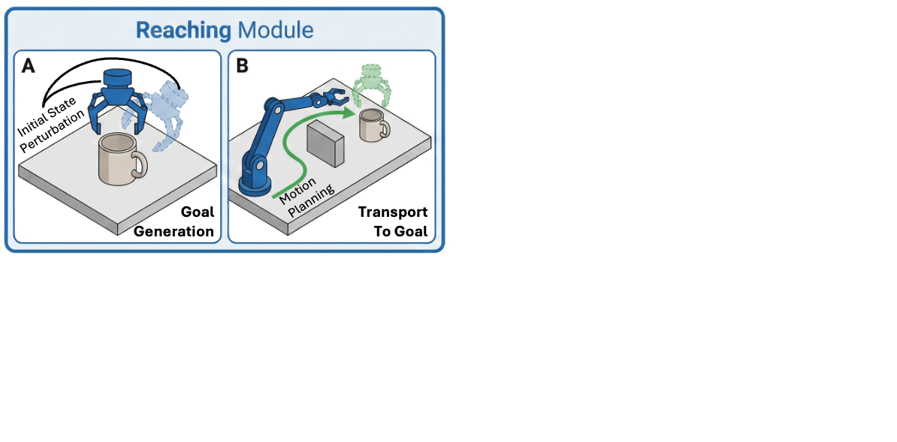
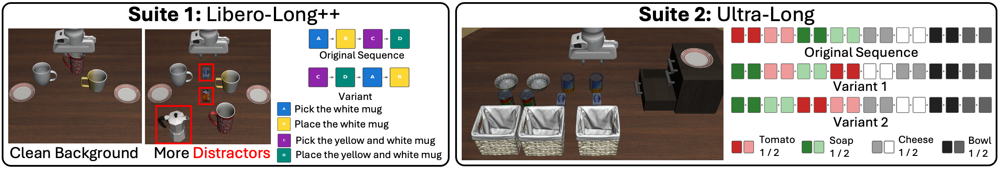
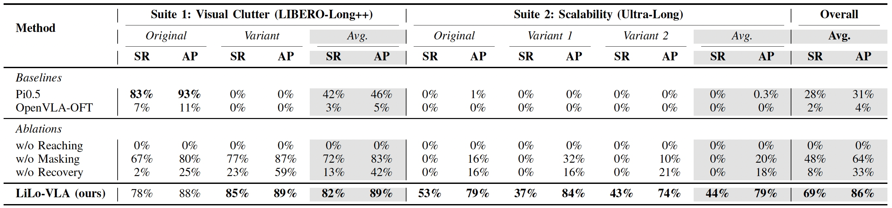
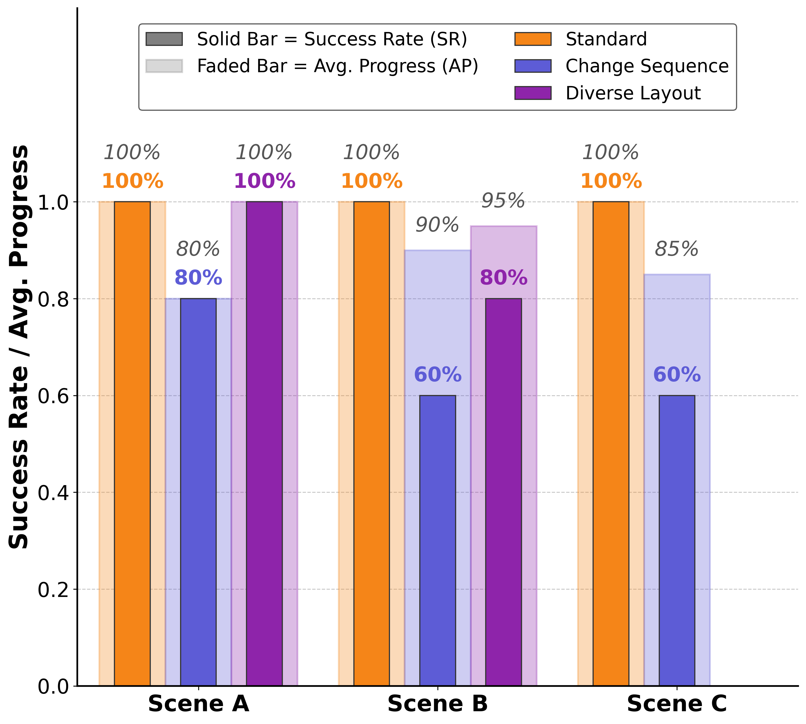

LiLo-VLA: Compositional Long-Horizon Manipulation via Linked Object-Centric Policies
LiLo-VLA decomposes long-horizon manipulation tasks into linked object-centric policies, enabling compositional generalization to novel task sequences and robust recovery from failures.
Abstract
General-purpose robots must master long-horizon manipulation, defined as tasks involving multiple kinematic structure changes (e.g., attaching or detaching objects) in unstructured environments. While Vision-Language-Action (VLA) models offer the potential to master diverse atomic skills, they struggle with the combinatorial complexity of sequencing them and are prone to cascading failures due to environmental sensitivity. To address these challenges, we propose LiLo-VLA (Linked Local VLA), a modular framework capable of zero-shot generalization to novel long-horizon tasks without ever being trained on them. Our approach decouples transport from interaction: a Reaching Module handles global motion, while an Interaction Module employs an object-centric VLA to process isolated objects of interest, ensuring robustness against irrelevant visual features and invariance to spatial configurations. Crucially, this modularity facilitates robust failure recovery through dynamic replanning and skill reuse, effectively mitigating the cascading errors common in end-to-end approaches. We introduce a 21-task simulation benchmark consisting of two challenging suites: LIBERO-Long++ and Ultra-Long. In these simulations, LiLo-VLA achieves a 69% average success rate, outperforming Pi0.5 by 41% and OpenVLA-OFT by 67%. Furthermore, real-world evaluations across 8 long-horizon tasks demonstrate an average success rate of 85%.
Framework

LiLo-VLA Architecture. Our framework decouples long-horizon manipulation into two specialized modules:
Reaching Module (Global Transport): Handles the "gross motion" to get the robot near the target. It uses collision-free motion planning and is trained with initial state perturbation to be robust against pose errors during deployment.
Interaction Module (Atomic Skills): Handles the "fine manipulation" using an object-centric VLA. It strictly utilizes wrist-view observations and visual masking to eliminate background distractors, ensuring the policy focuses solely on the object.
Closed-Loop Recovery: The system chains these modules sequentially. If a skill fails, the system automatically falls back to the Reaching Module to reset and retry, enabling robust long-horizon execution.
Benchmark

Evaluation Benchmarks. We introduce two challenging suites to rigorously assess long-horizon capabilities:
Suite 1: LIBERO-Long++ (Visual Robustness): Extends standard benchmarks by introducing complex backgrounds and multiple visual distractors (highlighted in red). This tests the agent's ability to ignore irrelevant objects.
Suite 2: Ultra-Long (Temporal Scalability): Pushes the horizon limit with task sequences extending up to 16 steps, testing the system's stability over long executions.
Both suites utilize permuted skill orders to evaluate zero-shot compositional generalization.
Results

Simulation Results. We extensively compare LiLo-VLA against state-of-the-art VLA baselines (Pi0, OpenVLA-OFT). The results highlight a significant performance gap:
Visual Robustness (Suite 1): In highly cluttered environments, LiLo-VLA achieves an 82% success rate, nearly doubling the performance of the strongest baseline (Pi0).
Extreme Scalability (Suite 2): In "Ultra-Long" tasks requiring up to 16 sequential skills, baselines completely fail (0% success) due to compounding errors. In contrast, LiLo-VLA maintains robust execution (44% success), proving the effectiveness of our closed-loop architecture.

Real-World Evaluation. We deployed LiLo-VLA on 8 diverse long-horizon tasks across varying table setups.
Reliability: The system achieves a perfect 100% success rate in standard configurations (Orange bars).
Generalization: Without any retraining, the policy successfully adapts to novel task sequences (Blue bars) and unseen object layouts (Purple bars). This demonstrates that our object-centric approach effectively disentangles skill execution from the environment, enabling robust zero-shot transfer in the real world.
Qualitative Results
BibTeX
@article{yang2026lilo,
title={LiLo-VLA: Compositional Long-Horizon Manipulation via Linked Object-Centric Policies},
author={Yang, Yue and Cheng, Shuo and Fang, Yu and Bharadhwaj, Homanga and Ding, Mingyu and Bertasius, Gedas and Szafir, Daniel},
journal={arXiv preprint arXiv:2602.21531},
year={2026}
}